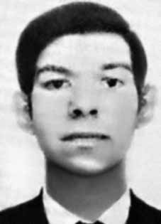

Nilton
Rosa
da Silva
CIRCUNSTÂNCIAS DA MORTE
Nilton Rosa da Silva morreu no dia 15 de junho de 1973 em Santiago, capital do Chile. No dia da morte de Nilton Rosa da Silva havia uma tensão muito grande, com greves dos mineiros e caminhoneiros, que detinham o apoio da Frente Nacionalista Patria Y Libertad. Essa Frente havia ameaçado destruir o Comitê Central do Partido Socialista, o que fez com que, naquele dia, diversos militantes fossem às ruas e se mobilizassem para protegê-lo.
Nessa ocasião, Nilton dirigia-se ao Palácio de La Moneda junto a outros estudantes do Instituto Pedagógico quando foram cercados por integrantes do partido Nacional e da Democracia Cristã, tendo sido baleado e morto. Segundo reportagem de 2013, do Jornal Sul 21, a morte de Nilton teria gerado grande comoção pública, que ficou evidente no seu sepultamento, que contou com a presença de diversas organizações de esquerda.
Sua morte antecedeu a primeira tentativa – dessa vez frustrada – de golpe de Estado no Chile, que ocorreu duas semanas depois do episódio e resultou, segundo o jornal, em um número aproximado de 22 mortos. Na reportagem se acentua, ainda, o silêncio por parte do governo Médici a respeito do assassinato de um brasileiro exilado, por grupos da extrema-direita no Chile.
Em sua homenagem foi plantado um jacarandá em frente a onde estudava, no prédio J da Universidade do Chile.
Nilton Rosa da Silva died on June 15, 1973 in Santiago, capital of Chile. On the day of Nilton Rosa da Silva's death there was great tension, with strikes by miners and truck drivers, who had the support of the Frente Nacionalista Patria Y Libertad. This Front had threatened to destroy the Central Committee of the Socialist Party, which meant that, on that day, several activists took to the streets and mobilized to protect it.
On that occasion, Nilton was heading to the La Moneda Palace along with other students from the Pedagogical Institute when they were surrounded by members of the National and Christian Democracy parties, and was shot and killed. According to a 2013 report by Jornal Sul 21, Nilton's death generated great public commotion, which was evident at his burial, which was attended by several left-wing organizations.
His death preceded the first attempt – this time frustrated – at a coup d'état in Chile, which occurred two weeks after the episode and resulted, according to the newspaper, in an approximate number of 22 deaths. The report also emphasizes the silence on the part of the Médici government regarding the murder of an exiled Brazilian by far-right groups in Chile.
In his honor, a jacaranda tree was planted in front of where he studied, in building J of the University of Chile.
Nilton Rosa da Silva falleció el 15 de junio de 1973 en Santiago, capital de Chile. El día de la muerte de Nilton Rosa da Silva hubo gran tensión, con huelgas de mineros y camioneros, que contaban con el apoyo del Frente Nacionalista Patria Y Libertad. Este Frente había amenazado con destruir el Comité Central del Partido Socialista, lo que provocó que, ese día, varios activistas salieran a las calles y se movilizaran para protegerlo.
En esa ocasión, Nilton se dirigía al Palacio de La Moneda junto con otros estudiantes del Instituto Pedagógico cuando fueron rodeados por miembros de los partidos Nacional y Democracia Cristiana, y fue asesinado a tiros. Según un informe de 2013 del Jornal Sul 21, la muerte de Nilton generó gran conmoción pública, que se hizo evidente en su entierro, al que asistieron varias organizaciones de izquierda.
Su muerte precedió al primer intento -esta vez frustrado- de golpe de Estado en Chile, ocurrido dos semanas después del episodio y que se saldó, según el diario, con un número aproximado de 22 muertos. El informe también destaca el silencio del gobierno de Médici ante el asesinato de un brasileño exiliado por grupos de extrema derecha en Chile.
En su honor se plantó un jacarandá frente a donde estudió, en el edificio J de la Universidad de Chile.